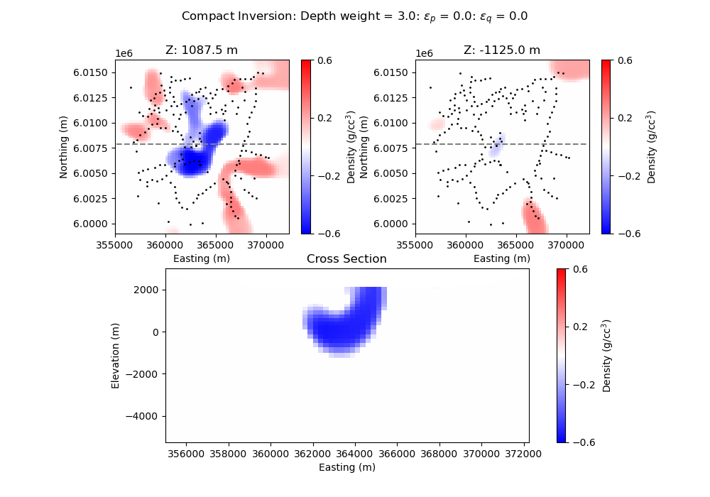

Note
Click here to download the full example code
PF: Gravity: Laguna del Maule Bouguer Gravity¶
This notebook illustrates the SimPEG code used to invert Bouguer gravity data collected at Laguna del Maule volcanic field, Chile. Refer to Miller et al 2016 EPSL for full details.
We run the inversion in two steps. Firstly creating a L2 model and then applying an Lp norm to produce a compact model.
Craig Miller

- 
Out:
Downloading https://storage.googleapis.com/simpeg/Chile_GRAV_4_Miller/Chile_GRAV_4_Miller.tar.gz
saved to: /home/vsts/work/1/s/examples/20-published/Chile_GRAV_4_Miller.tar.gz
Download completed!
SimPEG.InvProblem is setting bfgsH0 to the inverse of the eval2Deriv.
***Done using same Solver and solverOpts as the problem***
model has any nan: 0
=============================== Projected GNCG ===============================
# beta phi_d phi_m f |proj(x-g)-x| LS Comment
-----------------------------------------------------------------------------
x0 has any nan: 0
0 4.34e-04 1.30e+06 9.44e+01 1.30e+06 1.95e+02 0
1 2.17e-04 2.59e+03 5.96e+07 1.55e+04 1.22e+02 0
2 1.08e-04 1.06e+03 6.45e+07 8.05e+03 1.06e+02 0 Skip BFGS
3 5.42e-05 4.11e+02 6.86e+07 4.13e+03 8.45e+01 0 Skip BFGS
4 2.71e-05 1.49e+02 7.19e+07 2.10e+03 6.54e+01 0 Skip BFGS
Reached starting chifact with l2-norm regularization: Start IRLS steps...
eps_p: 0.3500952390244757 eps_q: 0.3500952390244757
5 1.35e-05 5.19e+01 1.47e+08 2.04e+03 4.29e+01 0 Skip BFGS
6 3.14e-05 3.63e+01 1.90e+08 6.00e+03 1.39e+02 0
7 1.75e-05 2.62e+02 2.12e+08 3.96e+03 1.40e+02 0
8 1.75e-05 1.43e+02 2.56e+08 4.61e+03 1.03e+02 0
9 1.04e-05 2.15e+02 2.31e+08 2.63e+03 8.44e+01 0
10 1.04e-05 1.31e+02 2.08e+08 2.30e+03 5.86e+01 0 Skip BFGS
11 1.04e-05 1.26e+02 1.77e+08 1.97e+03 5.32e+01 0
12 1.04e-05 1.20e+02 1.47e+08 1.65e+03 6.24e+01 0
13 1.04e-05 1.07e+02 1.25e+08 1.41e+03 6.06e+01 0
14 1.04e-05 9.61e+01 1.13e+08 1.27e+03 6.89e+01 0
15 1.04e-05 9.25e+01 1.01e+08 1.15e+03 5.33e+01 0
16 1.04e-05 8.51e+01 9.78e+07 1.11e+03 6.44e+01 0
17 1.04e-05 8.58e+01 8.23e+07 9.45e+02 5.56e+01 0
18 1.04e-05 7.03e+01 7.56e+07 8.59e+02 4.65e+01 0
19 1.04e-05 6.18e+01 7.32e+07 8.26e+02 4.75e+01 0 Skip BFGS
20 1.04e-05 6.04e+01 7.15e+07 8.07e+02 4.25e+01 0 Skip BFGS
------------------------- STOP! -------------------------
1 : |fc-fOld| = 1.9498e+01 <= tolF*(1+|f0|) = 1.3018e+05
0 : |xc-x_last| = 1.2406e+00 <= tolX*(1+|x0|) = 1.0400e-01
0 : |proj(x-g)-x| = 4.2456e+01 <= tolG = 1.0000e-01
0 : |proj(x-g)-x| = 4.2456e+01 <= 1e3*eps = 1.0000e-02
1 : maxIter = 20 <= iter = 20
------------------------- DONE! -------------------------
/home/vsts/work/1/s/examples/20-published/plot_laguna_del_maule_inversion.py:226: MatplotlibDeprecationWarning:
Starting from Matplotlib 3.6, colorbar() will steal space from the mappable's axes, rather than from the current axes, to place the colorbar. To silence this warning, explicitly pass the 'ax' argument to colorbar().
/home/vsts/work/1/s/examples/20-published/plot_laguna_del_maule_inversion.py:247: MatplotlibDeprecationWarning:
Starting from Matplotlib 3.6, colorbar() will steal space from the mappable's axes, rather than from the current axes, to place the colorbar. To silence this warning, explicitly pass the 'ax' argument to colorbar().
import os
import shutil
import tarfile
from SimPEG.potential_fields import gravity
from SimPEG import (
data,
data_misfit,
maps,
regularization,
optimization,
inverse_problem,
directives,
inversion,
)
from SimPEG import utils
from SimPEG.utils import download, plot2Ddata
import matplotlib.pyplot as plt
import numpy as np
from SimPEG.utils.drivers.gravity_driver import GravityDriver_Inv
def run(plotIt=True, cleanAfterRun=True):
# Start by downloading files from the remote repository
# directory where the downloaded files are
url = "https://storage.googleapis.com/simpeg/Chile_GRAV_4_Miller/Chile_GRAV_4_Miller.tar.gz"
downloads = download(url, overwrite=True)
basePath = downloads.split(".")[0]
# unzip the tarfile
tar = tarfile.open(downloads, "r")
tar.extractall()
tar.close()
input_file = basePath + os.path.sep + "LdM_input_file.inp"
# %% User input
# Plotting parameters, max and min densities in g/cc
vmin = -0.6
vmax = 0.6
# weight exponent for default weighting
wgtexp = 3.0
# %%
# Read in the input file which included all parameters at once
# (mesh, topo, model, survey, inv param, etc.)
driver = GravityDriver_Inv(input_file)
# %%
# Now we need to create the survey and model information.
# Access the mesh and survey information
mesh = driver.mesh #
survey = driver.survey
data_object = driver.data
# [survey, data_object] = driver.survey
# define gravity survey locations
rxLoc = survey.source_field.receiver_list[0].locations
# define gravity data and errors
d = data_object.dobs
# Get the active cells
active = driver.activeCells
nC = len(active) # Number of active cells
# Create active map to go from reduce set to full
activeMap = maps.InjectActiveCells(mesh, active, -100)
# Create static map
static = driver.staticCells
dynamic = driver.dynamicCells
staticCells = maps.InjectActiveCells(None, dynamic, driver.m0[static], nC=nC)
mstart = driver.m0[dynamic]
# Get index of the center
midx = int(mesh.nCx / 2)
# %%
# Now that we have a model and a survey we can build the linear system ...
# Create the forward model operator
simulation = gravity.simulation.Simulation3DIntegral(
survey=survey, mesh=mesh, rhoMap=staticCells, actInd=active
)
# %% Create inversion objects
reg = regularization.Sparse(
mesh, indActive=active, mapping=staticCells, gradientType="total"
)
reg.mref = driver.mref[dynamic]
reg.norms = np.c_[0.0, 1.0, 1.0, 1.0]
# reg.norms = driver.lpnorms
# Specify how the optimization will proceed
opt = optimization.ProjectedGNCG(
maxIter=20,
lower=driver.bounds[0],
upper=driver.bounds[1],
maxIterLS=10,
maxIterCG=20,
tolCG=1e-4,
)
# Define misfit function (obs-calc)
dmis = data_misfit.L2DataMisfit(data=data_object, simulation=simulation)
# create the default L2 inverse problem from the above objects
invProb = inverse_problem.BaseInvProblem(dmis, reg, opt)
# Specify how the initial beta is found
betaest = directives.BetaEstimate_ByEig(beta0_ratio=0.5, seed=518936)
# IRLS sets up the Lp inversion problem
# Set the eps parameter parameter in Line 11 of the
# input file based on the distribution of model (DEFAULT = 95th %ile)
IRLS = directives.Update_IRLS(
f_min_change=1e-4, max_irls_iterations=40, coolEpsFact=1.5, beta_tol=5e-1
)
# Preconditioning refreshing for each IRLS iteration
update_Jacobi = directives.UpdatePreconditioner()
sensitivity_weights = directives.UpdateSensitivityWeights()
# Create combined the L2 and Lp problem
inv = inversion.BaseInversion(
invProb, directiveList=[sensitivity_weights, IRLS, update_Jacobi, betaest]
)
# %%
# Run L2 and Lp inversion
mrec = inv.run(mstart)
if cleanAfterRun:
os.remove(downloads)
shutil.rmtree(basePath)
# %%
if plotIt:
# Plot observed data
# The sign of the data is flipped here for the change of convention
# between Cartesian coordinate system (internal SimPEG format that
# expects "positive up" gravity signal) and traditional gravity data
# conventions (positive down). For example a traditional negative
# gravity anomaly is described as "positive up" in Cartesian coordinates
# and hence the sign needs to be flipped for use in SimPEG.
plot2Ddata(rxLoc, -d)
# %%
# Write output model and data files and print misfit stats.
# reconstructing l2 model mesh with air cells and active dynamic cells
L2out = activeMap * invProb.l2model
# reconstructing lp model mesh with air cells and active dynamic cells
Lpout = activeMap * mrec
# %%
# Plot out sections and histograms of the smooth l2 model.
# The ind= parameter is the slice of the model from top down.
yslice = midx + 1
L2out[L2out == -100] = np.nan # set "air" to nan
plt.figure(figsize=(10, 7))
plt.suptitle("Smooth Inversion: Depth weight = " + str(wgtexp))
ax = plt.subplot(221)
dat1 = mesh.plotSlice(
L2out,
ax=ax,
normal="Z",
ind=-16,
clim=(vmin, vmax),
pcolorOpts={"cmap": "bwr"},
)
plt.plot(
np.array([mesh.vectorCCx[0], mesh.vectorCCx[-1]]),
np.array([mesh.vectorCCy[yslice], mesh.vectorCCy[yslice]]),
c="gray",
linestyle="--",
)
plt.scatter(rxLoc[0:, 0], rxLoc[0:, 1], color="k", s=1)
plt.title("Z: " + str(mesh.vectorCCz[-16]) + " m")
plt.xlabel("Easting (m)")
plt.ylabel("Northing (m)")
plt.gca().set_aspect("equal", adjustable="box")
cb = plt.colorbar(
dat1[0], orientation="vertical", ticks=np.linspace(vmin, vmax, 4)
)
cb.set_label("Density (g/cc$^3$)")
ax = plt.subplot(222)
dat = mesh.plotSlice(
L2out,
ax=ax,
normal="Z",
ind=-27,
clim=(vmin, vmax),
pcolorOpts={"cmap": "bwr"},
)
plt.plot(
np.array([mesh.vectorCCx[0], mesh.vectorCCx[-1]]),
np.array([mesh.vectorCCy[yslice], mesh.vectorCCy[yslice]]),
c="gray",
linestyle="--",
)
plt.scatter(rxLoc[0:, 0], rxLoc[0:, 1], color="k", s=1)
plt.title("Z: " + str(mesh.vectorCCz[-27]) + " m")
plt.xlabel("Easting (m)")
plt.ylabel("Northing (m)")
plt.gca().set_aspect("equal", adjustable="box")
cb = plt.colorbar(
dat1[0], orientation="vertical", ticks=np.linspace(vmin, vmax, 4)
)
cb.set_label("Density (g/cc$^3$)")
ax = plt.subplot(212)
mesh.plotSlice(
L2out,
ax=ax,
normal="Y",
ind=yslice,
clim=(vmin, vmax),
pcolorOpts={"cmap": "bwr"},
)
plt.title("Cross Section")
plt.xlabel("Easting(m)")
plt.ylabel("Elevation")
plt.gca().set_aspect("equal", adjustable="box")
cb = plt.colorbar(
dat1[0],
orientation="vertical",
ticks=np.linspace(vmin, vmax, 4),
cmap="bwr",
)
cb.set_label("Density (g/cc$^3$)")
# %%
# Make plots of Lp model
yslice = midx + 1
Lpout[Lpout == -100] = np.nan # set "air" to nan
plt.figure(figsize=(10, 7))
plt.suptitle(
"Compact Inversion: Depth weight = "
+ str(wgtexp)
+ ": $\epsilon_p$ = "
+ str(round(reg.eps_p, 1))
+ ": $\epsilon_q$ = "
+ str(round(reg.eps_q, 2))
)
ax = plt.subplot(221)
dat = mesh.plotSlice(
Lpout,
ax=ax,
normal="Z",
ind=-16,
clim=(vmin, vmax),
pcolorOpts={"cmap": "bwr"},
)
plt.plot(
np.array([mesh.vectorCCx[0], mesh.vectorCCx[-1]]),
np.array([mesh.vectorCCy[yslice], mesh.vectorCCy[yslice]]),
c="gray",
linestyle="--",
)
plt.scatter(rxLoc[0:, 0], rxLoc[0:, 1], color="k", s=1)
plt.title("Z: " + str(mesh.vectorCCz[-16]) + " m")
plt.xlabel("Easting (m)")
plt.ylabel("Northing (m)")
plt.gca().set_aspect("equal", adjustable="box")
cb = plt.colorbar(
dat[0], orientation="vertical", ticks=np.linspace(vmin, vmax, 4)
)
cb.set_label("Density (g/cc$^3$)")
ax = plt.subplot(222)
dat = mesh.plotSlice(
Lpout,
ax=ax,
normal="Z",
ind=-27,
clim=(vmin, vmax),
pcolorOpts={"cmap": "bwr"},
)
plt.plot(
np.array([mesh.vectorCCx[0], mesh.vectorCCx[-1]]),
np.array([mesh.vectorCCy[yslice], mesh.vectorCCy[yslice]]),
c="gray",
linestyle="--",
)
plt.scatter(rxLoc[0:, 0], rxLoc[0:, 1], color="k", s=1)
plt.title("Z: " + str(mesh.vectorCCz[-27]) + " m")
plt.xlabel("Easting (m)")
plt.ylabel("Northing (m)")
plt.gca().set_aspect("equal", adjustable="box")
cb = plt.colorbar(
dat[0], orientation="vertical", ticks=np.linspace(vmin, vmax, 4)
)
cb.set_label("Density (g/cc$^3$)")
ax = plt.subplot(212)
dat = mesh.plotSlice(
Lpout,
ax=ax,
normal="Y",
ind=yslice,
clim=(vmin, vmax),
pcolorOpts={"cmap": "bwr"},
)
plt.title("Cross Section")
plt.xlabel("Easting (m)")
plt.ylabel("Elevation (m)")
plt.gca().set_aspect("equal", adjustable="box")
cb = plt.colorbar(
dat[0], orientation="vertical", ticks=np.linspace(vmin, vmax, 4)
)
cb.set_label("Density (g/cc$^3$)")
if __name__ == "__main__":
run()
plt.show()
Total running time of the script: ( 3 minutes 23.181 seconds)
Estimated memory usage: 243 MB